Ship Picture
Ship Name
Shield
Armor
Cost
Cargo and Weapons Space
Pre-loaded Weapons
Comments

Shuttlecraft
180
80
10,000 Credits
200 MPH
435 MPH per sec.
20 Cargo, 15 Weapons
1 Blaze Cannon
You start the game with one
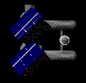
Freighter
250
300
150,000 Credits
100 MPH
190 MPH per sec.
160, 50
NONE
Don't leave core UE space if you are using a Freighter, you won't last even a moment
UE Fighter
250
50
100,000 Credits
300 MPH
650 MPH per sec.
1, 21
4 Blaze Cannons, 2 Rockets
NOT PURCHASABLE
A very powerful fighter, in my mind greater than the Crescent fighter, only
purchase if you plan on raiding or ships, not if you plan on doing any cargo
missions.
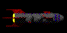
UE Destroyer
1200
400
2 Mil. Credits
150 MPH
350 MPH per sec.
30, 35
3 Blaze Turrets, 5 Rockets, 5 Hunter Missiles
NOT PURCHASABLE
Dangerous and powerful ship, can easily destroy a Voinian Cruiser in packs.
they make good escorts if you have the money, but aren't very good alone.
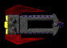
UE Carrier
1500
800
6 Mil. Credits
75 MPH
140 MPH per sec.
50, 45
3 Blaze Turrets, 10 Hunter Missiles, 5 UE Fighters
NOT PURCHASABLE
The Carrier itself is not very dangerous, but its payload of UE Fighters
can shred all but the most powerful enemies.
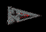
Voinian Supply Ship
40
400
300,000 Credits
75 MPH
120 MPH per sec.
250, 40
1 Neutron Turret
NOT PURCHASABLE
Never buy the Supply Ship, it's only good for plundering
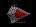
Voinian Heavy Fighter
20
200
300,000 Credits
200 MPH
400 MPH per sec.
20, 10
3 Neutron Cannons, 5 Rockets
NOT PURCHASABLE
This is the worst fighter next to the Emalgha, sure, it has firepower, but
it slowness and minor amounts of protection leave it lacking. Makes a great
ship to capture as an escort.
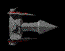
Voinian Frigate
100
2500
5 mil. Credits
110 MPH
240 MPH per sec.
60, 55
2 Neutron Turrets, 25 Turreted Rockets
NOT PURCHASABLE
The Voinian Frigate is available after the Voinian missions. It has an advantage
and a disadvantage. Its advantage is its almost impervious armor to non-UE
weapons. Its disadvantage is its utter slowness and lack of maneuverability
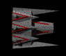
Voinian Cruiser
150
5000
14 mil. Credits
75 MPH
120 MPH per sec.
90, 80
3 Neutron Turrets,
40 Turreted Rockets, 4 Voinian Heavy Fighters
NOT PURCHASABLE
The Voinian Cruiser is one of the most destructive ships ever designed.
No Crescent ship can stop it. The only thing it needs is a speed upgrade.
The only ship comparable is the UE Cruiser.
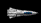
Scoutship
250
50
100,000 Credits
200 MPH
375 MPH per sec.
40, 30
2 Blaze Cannons
Great little ship, all it needs are a few more blaze cannons and you can be a pirate
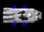
Freight-Courier
600
250
1 mil. Credits
175 MPH
300 MPH per sec.
80, 50
2 Blaze Turrets, 5 Hunter Missiles
The most mediocre ship around, its got a large cargo hold, but not enough shields to protect it. Weaponry stinks for the price you pay and the thing's as slow as molasses.
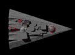
Voinian Dreadnought
1500
15000
30 mil. Credits
60 MPH
100 MPH per sec.
150, 150
6 Neutron Turrets, 10 Voinian Interceptors, 120 Turreted Rockets
NEVER PURCHASABLE
The scourge of the galaxy, this behemoth will annihilate all but the most
powerful ships. Its practically unlimited supply of rockets are deadly at
close range and a single pass on it can kill you. Wait at a distance and
let it use up its rockets and fighters on the destroyers nearby. Only attempt
its mission if you have done a lot more in the galaxy and are trained in
combat.
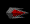
Voinian Interceptor
50
250
200,000 Credits
250 MPH
500 MPH per sec.
10, 10
2 Neutron Cannons
NOT PURCHASABLE
An all-round better ship than the Heavy Figher.
Krait
100
0
50,000 Credits
350 MPH
700 MPH per sec.
0, 20
3 Blaze Cannon
The wimpiest ship in the galaxy. The Krait is the average pirate raiding ship. DON'T BUY IT!
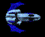
Turncoat
750
300
1.5 mil. Credits
120 MPH
280 MPH per sec.
65, 50
2 Blaze Turrets, 3 Kraits, 10 Needle Missiles
Nasty pirate ship early on. Any Crescent can take it out, but a UE Courier or Scoutship is doomed. Its Kraits are just annoying.
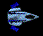
Helian
350
100
250,000 Credits
180 MPH
320 MPH per sec.
50, 40
3 Blaze Cannons, 5 Needle Missiles
Good ship to purchase early on, it can defend itself and can carry a good amount of cargo.
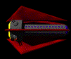
UE Cruiser
3000
1000
10,5 mil. Credits
100 MPH
225 MPH per sec.
50, 40
4 Blaze Turrets, 15 Hunter Missiles, 15 Rockets, 5 UE Fighters
NOT PURCHASABLE
The UE Cruiser is a good ship but it does not have the strength of an Igazra.
Its UE Fighters are the best tool for destroying more powerful ships.
The Nadir
1500
500
100 mil. Credits
150 MPH
350 MPH per sec.
0, 0
4 Blaze Turrets, 6 Kraits, 200 Needle Missiles, 20 Hunter Missiles
NEVER PURCHASABLE
Only found in a certain mission, this is no ordinary Turncoat. Be prepared
to fight a good deal more to kill this one.
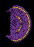
400
100
500,000 Credits
175 MPH
300 MPH per sec.
60, 30
1 Phase Turret
Great ship, it can go forever without having to stop and refuel. It has a fuel tank of 15 jumps. It can carry a good amount of cargo and has fair shields for its type.
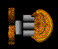
Miranu Freighter
600
250
800,000 Credits
120 MPH
240 MPH per sec.
240, 40
1 Phase Turret, 10 Defense Pods
Can't survive a fire fight but can haul one heck of a lot of cargo. Good if you're just a commodity trader.
Miranu Heavy Freighter
800
400
1.2 mil. Credits
85 MPH
150 MPH per sec.
500, 50
1 Phase Turret, 15 Defense Pods
The ultimate ship for a commodity trader, it can carry twice as much cargo as the Miranu Freighter and its defenses are a bit stronger
Crescent Fighter
250
0
800,000 Credits
450 MPH
1000 MPH per sec.
5, 45
4 Phase Cannons
The average fighter of the Crescent, its best selling point is its blinding speed.
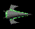
Arada
500
100
1 mil. Credits
300 MPH
600 MPH per sec.
40, 80
4 Phase Cannons
This sweet little ship costs as much as a Freight-Courier, but it has many uses it can be modified to. There are different versions of this ship throughout the different Strands.
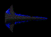
Crescent Warship
2500
250
9 mil. Credits
175 MPH
300 MPH per sec.
70, 35
3 Phase Turrets, 3 Crescent Fighters, 15 SAD Modules
Most powerful civilian ship, it carries 3 Crescent Fighters, a devastating arsenal and hard shields. Its a good ship until you can upgrade to one of the governments' military cruisers.
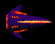
Zidara
1800
150
5.5 mil. Credits
250 MPH
450 MPH per sec.
40, 30
2 Phase Turrets, 10 Dispersal Rockets, 2 Phased Beams, 2 Zidagar Fighters
NOT PURCHASABLE
The Zidara is a cruiser that handles like a heavy fighter. While its shields
are weak, its handling makes it deadly. Its fighters are nothing to toy
with as well.
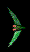
Azdara
190
0
1.5 mil. Credits
550 MPH
1800 MPH per sec.
1, 27
3 Swivel Phase Cannons
NOT PURCHASABLE
These ships are like flies, one will annoy you , seven will drive you mad.
If a pack of these guys attacks you, your best defense is to fire dispersal
or normal rockets at them. If they leave the screen their shields will have
regenerated to full by the time you see them again, so you need to kill
them quickly or you won't be able to.
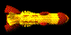
Igazra
5000
400
15 mil. Credits
130 MPH
275 MPH per sec.
40, 40
5 Phase Turrets, 30 SAE Modules, 10 Dispersal Rockets
NOT PURCHASABLE
The Igazra is the most powerful ship in the galaxy, next only to the Dreadnought.
Its phase turrets can eliminate most opposition by themselves. Destroying
one of these ships takes patience and a lot of armor, high shield won't
do you any good versus this thing.
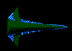
Azdgari Warship
2500
250
12 mil. Credits
175 MPH
350 MPH per sec.
55, 20
4 Phase Turrets, 6 Azdara Fighters
NEVER PURCHASABLE
The Azdgari Warship is a modified Crescent Warship thus you can modify yours
to like this one. Its fighters are as devastating as UE Fighters because
of the number it carries.